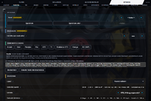
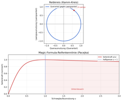

OmegaSim Wiki – die Idee dazu stammt von Gnen54. Hier stehen die offenen Artikel von Nutzer Luuke42 unter der Lizenz CC BY-SA 4.0.
Fahrgefuehl
Stand dieses Artikels: OmegaSim 1.2.50 vom 30.10.2026 · Firmware des Autos: nicht bekannt (OmegaSim liest die Firmware-Version nicht aus)
Dieser Text wurde mithilfe von KI erstellt (Claude) und ist nicht in jedem Punkt von Menschen geprüft. Fehler bitte direkt verbessern oder auf der Diskussionsseite melden, siehe Mitmachen. Die öffentliche Fassung auf luuke42.github.io/omegasim kann älter sein als der hier beschriebene Stand.


Das Fahrgefühl ist in OmegaSim der fertige Satz von Reglerwerten, der bestimmt, wie sich ein Carrera HYBRID-Auto fährt: wie stark es beschleunigt, bremst, lenkt und in der Kurve hält. Es gibt neun solche Sätze (Voreinstellungen oder Presets). Drei davon stehen im FAHREN-Menü, in der Garage und am Cockpit-Knopf – Arcade, Sim+ und Pacejka – die übrigen sechs liegen unter Optionen → Fahrgefühl → Voreinstellungen.
Auf einen Blick
| Merkmal | Wert |
|---|---|
| Menüpfad | Optionen → Fahrgefühl; Kurzwahl in FAHREN, in der Garage und am Cockpit-Knopf |
| Fahrgefühle in FAHREN | Arcade, Sim+, Pacejka |
| Übrige Fahrgefühle | Pro, GT3, F1, Realismus GT3, Omega, RC (WIP) |
| Vorgabe nach Neuinstallation | die Werte im Markup entsprechen dem Fahrgefühl Pacejka (Steuerungsmodus Pacejka, sonst Pro-Werte) |
| Steuerungsmodus | Physik, Pacejka, RC („Aus“); seit 1.0.22 ausgeblendet, hängt am Fahrgefühl |
| Quelle | src/98-presets.js (Reglerwerte), src/40-physics.js (Rechenweg), src/50-drive.js (Umschaltung)
|
Die drei Fahrgefühle im FAHREN-Menü
Die drei Sätze, die man beim Fahren direkt umschalten kann, unterscheiden sich am deutlichsten im Rechenweg und in der Nachsicht:
Arcade
Das Arcade-Fahrgefühl ist der einfachste und nachsichtigste Satz. Es schaltet die Kopplung von Gas und Bremse an die Lenkung ab (lenkKopplungAus): Beim Beschleunigen oder Bremsen wird das Auto nicht nervös, und die tempoabhängige Lenkgrenze entfällt. Der Reifengrip steht auf dem vollen Wert, Reifenverschleiß und Tankgewicht sind aus, die Bremse ist die stärkste (Faktor 4,0) und das Auto beschleunigt in 1,6 s auf 100. Kurz: „zum Fahren ohne Nachdenken“. Es entspricht dem ursprünglichen Sim-Modus der frühen Fassungen.
Sim+
Sim+ („Pro mit mehr Lenkung, Beschleunigung und Bremse“) übernimmt die komplette Pro-Abstimmung, ändert aber drei Werte: eine direktere Lenkung (phys-steerresp 3,3 statt 2,5), einen höheren Beschleunigungsfaktor (1,15) und eine stärkere Bremse (2,2). Der Rechenweg ist identisch mit Pro – es fühlt sich nur agiler und leichter an.
Pacejka
Pacejka ist Pro plus der Reifenkennlinie nach der Magic Formula (von Grund auf erklärt im Artikel Pacejka, Abrechnung siehe Fahrverhalten). Der Rechenweg läuft genauso wie bei Physik, aber die Lenkung wird am Limit von der Pacejka-Kurve geformt. Unterhalb der Haftgrenze fährt sich Pacejka wie Physik; darüber reduziert es den Einschlag (Untersteuern) oder – bei eingeschaltetem Übersteuern – lenkt es von selbst weiter ein. Pacejka ist experimentell und die Vorgabe nach Neuinstallation.
Die übrigen sechs Fahrgefühle
Die übrigen Sätze liegen unter Optionen → Fahrgefühl → Voreinstellungen (Reihenfolge dort):
| Fahrgefühl | Kurzcharakteristik |
|---|---|
| Pro | die Grundabstimmung: Automatik, 2,6 s auf 100, Reifenmodell und Tankgewicht an, Lenkkalibrierung 250 %, Steuerungsmodus Physik |
| GT3 | sportlich mit Simulationstiefe: von Hand schalten, 2,9 s auf 100, Bremsfading, Windschatten und ungleicher Verschleiß voll an |
| F1 | das schärfste der fahrbaren: von Hand schalten, 2,5 s, stärkster Verschleiß, kürzeste Bremse, feinste Lenkung, längstes Ausrollen, Reifenwärmer an |
| Realismus GT3 | gegen echte Werte kalibriert (3,2 s gemessene Reihe, RMSE 7,3 %), härteste Stufe |
| Omega | Pro, wie es in v0.9 war – eingefroren, bleibt bei künftigen Pro-Änderungen stehen |
| RC (WIP) | wie ein Fernsteuerungsauto: Arcade mit allen Reglern am Anschlag, Steuerungsmodus „Aus“ – Gas läuft in 2 s aus, Bremse sofort, zweiter Bremsdruck im Stand = rückwärts |
Der Steuerungsmodus
Hinter jedem Fahrgefühl steht ein Steuerungsmodus (Rechenweg der Fahrphysik). Er ist seit 1.0.22 ausgeblendet und hängt am Fahrgefühl, ist aber der eigentliche Unterschied zwischen den Sätzen:
| Modus | Anzeige | Bedeutung |
|---|---|---|
physik |
„Physik“ | Drehmoment, Gänge, Reibkreis, Gewichtsverlagerung, Reifen- und Bremsentemperatur, Einspurmodell. Die Vorgabe der Rechenschritte. |
pacejka |
„Pacejka (experimentell)“ | wie Physik, zusätzlich Reifenkennlinie nach der Magic Formula. Der Standard im Markup. |
aus |
„RC (experimentell)“ | kein Fahrzeugmodell – der Stick geht roh ans Auto. Entspricht dem Fahrgefühl RC. |
Gibt es „SETA“?
Nein. Ein Fahrhilfe- oder Stabilitätsmodul namens „SETA“ gibt es in OmegaSim nicht – es ist weder ein Fahrgefühl noch ein Regler. Was man darunter verstehen könnte, ist die Fahrhilfe (driver-assist, experimentell): unter Optionen → Fahrgefühl → Fahrhilfe mit den Stellungen aus, Querlage und voll. Sie lässt das Auto die Spur halten oder selbst lenken, braucht aber eine eingescannte Strecke und den Bahn-Modus. Die Fahrhilfe ist von den Fahrphysik-Modellen getrennt; die Fahrgefühle regeln nur, wie das Auto auf Gas, Bremse und Lenkung reagiert.
Diagramm: Reibkreis und Reifenkennlinie


Zwei Kurven erklären das Fahrgefühl am besten:
- Reibkreis (Kamm-Kreis): Die Querkraft für die Kurve und die Längskraft für Gas/Bremse teilen sich die maximale Kraft des Reifens. Wer in der Kurve viel Querkraft braucht, hat für Gas oder Bremse nur den Rest:
Längsanteil = √(1 − Queranteil²)
- Magic Formula: Die Reifenkennlinie „Seitenkraft über Schräglaufwinkel“ folgt der Pacejka-Formel
y(u) = sin(C·atan(B·u − E·(B·u − atan(B·u)))). Bis zum Scheitel bringt mehr Einschlag mehr Kraft; dahinter schiebt das Auto (Untersteuern) oder das Heck bricht aus (Übersteuern).
Siehe auch
Quellen im Code
src/98-presets.js:PRESETS,PRESETS_FAHREN,applyPreset(),setzeBrakeStealLast()src/40-physics.js:pacejkaStep(),pacY(),pacB(), Reibkreissrc/50-drive.js:physModusAnwenden()src/00-index.head.html: Regler unter#sub-opt-feel
Weblinks
- Browserfassung, Android-App und Quellcode: Links auf der Hauptseite